import numpy as np
import pandas as pd
import matplotlib.pyplot as plt
import seaborn as sns
import statsmodels.api as sm
import statsmodels.formula.api as smf
from statsmodels.iolib.summary2 import summary_col
import scipy.stats as stats
sns.set_style('darkgrid')17 Nonlinear Regression Functions
17.1 Introduction
We start our regression analysis in Chapter 13 by assuming a linear population function \(\E(Y|X_1)=\beta_0+\beta_1X_1\). However, in many cases, the relationship between \(Y\) and \(X_1\) is nonlinear. In this case, the effect of a change in \(X_1\) on \(Y\) is not constant. In Figure 17.1, we illustrate population regression functions that have different slopes. In the linear case, as shown in the first plot of Figure 17.1, the slope of the population regression function is constant. However, in the second plot, the slope of the population regression function depends on the value of another variable \(X_2\). In the third plot, the slope of the population regression function depends on the value of \(X_1\). In this chapter, we consider how to model nonlinear regression functions.
# Generate data
x = np.linspace(1, 10, 50)
y1 = 3.5+2 * x # Constant slope
x2 = np.ones_like(x)
y2_1 = 1 + 0.5 * x
y2_2 = 1 + 0.5 * x + 0.5*x*x2
y3 = 0.5*x**2
# Create the figure and subplots
fig, axs = plt.subplots(1, 3, figsize=(7.5, 3))
# Plot 1: Constant slope
axs[0].plot(x, y1, color='steelblue')
axs[0].set_title('Constant slope', fontsize=10)
axs[0].set_xlabel(r'$X_1$', fontsize=9)
axs[0].set_ylabel(r'$Y$', fontsize=9)
# Plot 2: Slope depends on the value of X2
axs[1].plot(x, y2_1, label='When $X_2=0$', color='steelblue')
axs[1].plot(x, y2_2, label='When $X_2=1$', color='black')
axs[1].set_title('Slopes depends on the value of $X_2$', fontsize=10)
axs[1].set_xlabel(r'$X_1$', fontsize=9)
axs[1].set_ylabel(r'$Y$', fontsize=9)
axs[1].legend(frameon=False)
# Plot 3: Slope depends on the value of X1
axs[2].plot(x, y3, color='steelblue')
axs[2].set_title('Slope depends on the value of $X_1$', fontsize=10)
axs[2].set_xlabel(r'$X_1$', fontsize=9)
axs[2].set_ylabel(r'$Y$', fontsize=9)
# Adjust layout
plt.tight_layout()
plt.show()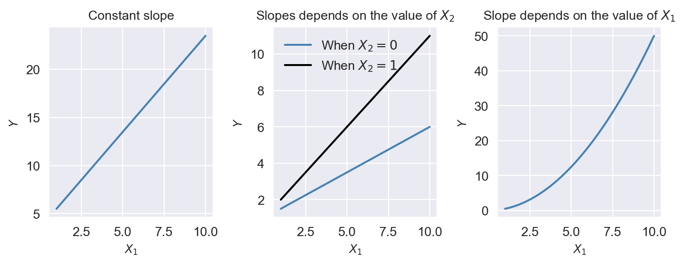
17.2 A general strategy for modeling nonlinear regression functions
The general nonlinear population regression model is \[ \begin{align} Y_i=f(X_{1i},X_{2i},\dots,X_{ki})+u_i,\quad i=1,2,\dots,n, \end{align} \]
where \(f(X_{1i},X_{2i},\dots,X_{ki})\) is the population nonlinear regression function and \(u_i\) is the error term. We will consider this model under the four least squares assumptions given in Chapter 15. Then, under the zero-conditional mean assumption, we have \(\E(Y|X_{1},X_{2},\dots,X_{k})=f(X_{1},X_{2},\dots,X_{k})\). Because of the nonlinear relationship between the conditional mean \(\E(Y|X_{1},X_{2},\dots,X_{k})\) and the regressors, the effect of a change in one regressor on the conditional mean requires a more complex analysis than in the linear case.
Let us assume that \(X_1\) changes by \(\Delta X_1\) and let \(\E(Y^*|X_{1}, X_{2},\dots,X_{k})=f(X_{1}+\Delta X_1,X_{2},\dots,X_{k})\) be the expected value of \(Y\) when \(X_1\) changes by \(\Delta X_1\). Then, the expected change in \(Y\) associated with the change in \(X_1\) by \(\Delta X_1\), holding \(X_2,\dots, X_k\) constant, is \[ \begin{align} \Delta Y&=\E(Y^*|X_{1}+\Delta X_1, X_{2},\dots,X_{k})-\E(Y|X_{1},X_{2},\dots,X_{k}),\\ &=f(X_{1}+\Delta X_1, X_{2},\dots,X_{k})-f(X_{1}, X_{2},\dots,X_{k}). \end{align} \]
Let \(\hat{f}\) be an estimator of \(f\). Then, the predicted values of \(Y\) based on \(\hat{f}\) is \(\hat{f}(X_{1},X_{2},\dots,X_{k})\). Thus, the predicted change in \(Y\) is \[ \begin{align*} \Delta\hat{Y}=\hat{f}(X_{1}+\Delta X_1, X_{2},\dots,X_{k})-\hat{f}(X_{1}, X_{2},\dots,X_{k}). \end{align*} \]
We can compute the predicted change in \(Y\) for different values of \(\Delta X_1\) and plot the predicted change in \(Y\) against \(\Delta X_1\). The plot will show how the predicted change in \(Y\) depends on the change in \(X_1\).
17.3 Nonlinear functions of a single independent variable
In this section, we consider two nonlinear regression models: the polynomial regression model and the logarithmic regression model. For the sake of brevity, we consider the case of a single independent variable \(X_1\), though the results can be generalized to multiple independent variables.
17.3.1 Polynomial regression models
A polynomial regression model is a special case of a nonlinear regression model. A polynomial regression model of degree \(m\) is \[ \begin{align} Y_i=\beta_0+\beta_1X_{i}+\beta_2X_{i}^2+\cdots+\beta_mX_{i}^m+u_i,\quad i=1,2,\dots,n. \end{align} \]
The linear model is a special case of the polynomial model with \(m=1\). This model reduces to the linear model if we fail to reject the joint null hypothesis \(H_0:\beta_2=\beta_3=\cdots=\beta_m=0\) against the alternative hypothesis \(H_1:\) At least one of the coefficients is not zero. When \(m=2\), the polynomial model is called a quadratic model, and when \(m=3\), the polynomial model is called a cubic model. As with the linear model, the quadratic and cubic models can be tested against the polynomial regression model of degree \(m\) by adjusting the null and alternative hypotheses accordingly. These joint null hypotheses can be tested using the F-statistic introduced in Chapter 16.
Note that since the polynomial model is linear in the parameters, we can use the OLS estimator to estimate the model. The degree of the model can be selected using a sequential hypothesis testing approach based on the individual \(t\)-statistic. This approach consists of the following steps:
- Use economic theory and expert judgement to choose the maximum degree of the polynomial model, \(m\). In many cases involving economic data, \(m = 2\) or \(m = 3\) is sufficient.
- Estimate the polynomial model of degree \(m\). If the \(t\)-statistic for the highest-order term is statistically significant, then the polynomial model of degree \(m\) is the appropriate model. If the \(t\)-statistic for the highest-order term is not statistically significant, then estimate the polynomial model of degree \(m - 1\).
- Repeat this process until the \(t\)-statistic for the highest-order term is statistically significant.
The final model obtained through this sequential testing approach is the polynomial model of the highest degree for which the \(t\)-statistic is statistically significant.
As an example, we consider the test scores data available in the caschool.xlsx file. The following code chunk imports the data and displays the column names.
# Import data
mydata = pd.read_excel("data/caschool.xlsx", sheet_name="caschool", header=0)
# Column names
mydata.columnsIndex(['Observation Number', 'dist_cod', 'county', 'district', 'gr_span',
'enrl_tot', 'teachers', 'calw_pct', 'meal_pct', 'computer', 'testscr',
'comp_stu', 'expn_stu', 'str', 'avginc', 'el_pct', 'read_scr',
'math_scr'],
dtype='object')We consider the relationship between the test scores (testscr) and two other variables: the student-teacher ratio (str), and the average district income (avginc). The average district income is measured in thousands of 1998 dollars (i.e., one unit increase in avginc means 1000 dollars increase). In Figure 17.2, we present scatter plots of test scores against the student-teacher ratio and average district income. The scatter plot of test scores against the student-teacher ratio suggests a linear relationship, whereas the scatter plot of test scores against average district income suggests a nonlinear relationship.
# Scatterplots
# Regression of Test Score on STR
X = mydata['str']
y = mydata['testscr']
X = sm.add_constant(X)
model1 = sm.OLS(y, X).fit(cov_type="HC1")
plt.figure(figsize=(6, 4))
plt.scatter(mydata['str'], mydata['testscr'], color='steelblue', s=15,
label='Data points')
plt.xlabel('STR (X)')
plt.ylabel('Test Score (Y)')
plt.plot(mydata['str'], model1.predict(X), color='black',
linewidth=1, label='Regression line')
plt.legend()
plt.show()
# Scatterplot of Test Score and Income
X = mydata['avginc']
y = mydata['testscr']
X = sm.add_constant(X)
model1 = sm.OLS(y, X).fit(cov_type="HC1")
plt.figure(figsize=(6, 4))
plt.scatter(mydata['avginc'], mydata['testscr'], color='steelblue', s=15,
label='Data points')
plt.xlabel('Income (X)')
plt.ylabel('Test Score (Y)')
plt.plot(mydata['avginc'], model1.predict(X), color='black',
linewidth=1, label='Regression line')
plt.legend()
plt.show()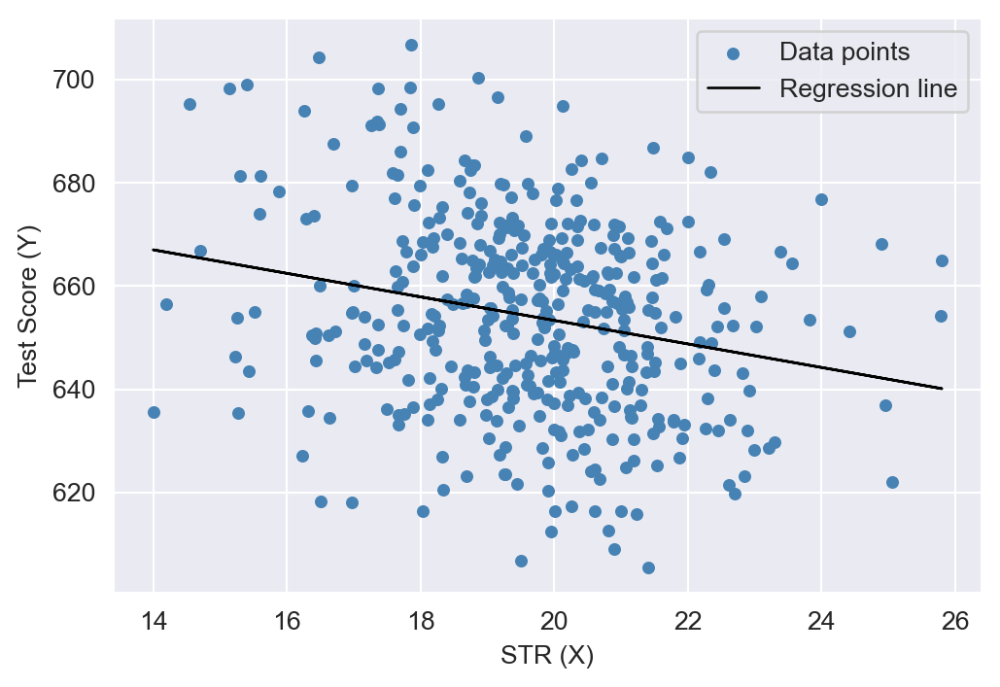
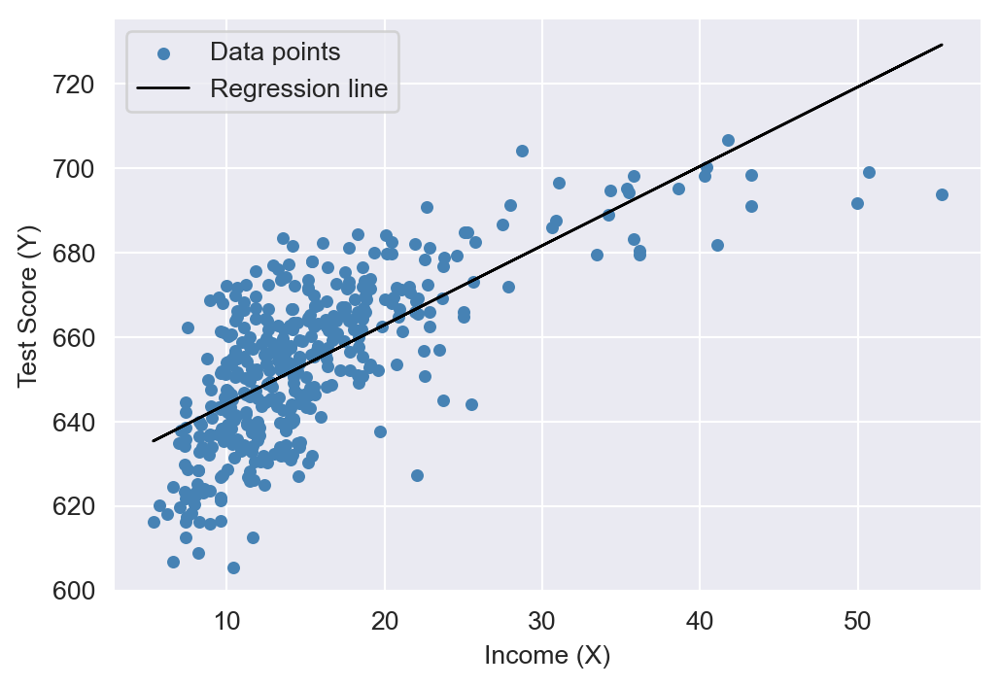
We consider the following polynomial regression models of the test scores and district income:
\[ \begin{align} &\text{Linear}:\quad \text{TestScore}=\beta_0+\beta_1\text{Income}+u,\label{eq3}\\ &\text{Quadratic}:\quad \text{TestScore}=\beta_0+\beta_1\text{Income}+\beta_2\text{Income}^2+u,\label{eq4}\\ &\text{Cubic}:\quad \text{TestScore}=\beta_0+\beta_1\text{Income}+\beta_2\text{Income}^2+\beta_3\text{Income}^3+u.\label{eq5} \end{align} \]
We estimate these models using the OLS estimator. In the following code chunk, we use the I() function to create the quadratic and cubic terms directly within the regression formula. Otherwise, we would need to create these variables manually and add them to the data frame mydata. The estimation results are presented in Table 17.1.
# Linear model
model1 = smf.ols(formula='testscr ~ avginc',data=mydata).fit(cov_type="HC1")
# Quadratic model
model2 = smf.ols(formula='testscr ~ avginc + I(avginc**2)',
data=mydata).fit(cov_type="HC1")
# Cubic specification
model3 = smf.ols(formula='testscr ~ avginc + I(avginc**2) + I(avginc**3)',
data=mydata).fit(cov_type="HC1")# Print results in table form
models=['Linear', 'Quadratic', "Cubic"]
results_table=summary_col(results=[model1,model2,model3],
float_format='%0.3f',
stars=True,
model_names=models)
results_table| Linear | Quadratic | Cubic | |
| Intercept | 625.384*** | 607.302*** | 600.079*** |
| (1.868) | (2.902) | (5.102) | |
| avginc | 1.879*** | 3.851*** | 5.019*** |
| (0.114) | (0.268) | (0.707) | |
| I(avginc ** 2) | -0.042*** | -0.096*** | |
| (0.005) | (0.029) | ||
| I(avginc ** 3) | 0.001** | ||
| (0.000) | |||
| R-squared | 0.508 | 0.556 | 0.558 |
| R-squared Adj. | 0.506 | 0.554 | 0.555 |
Standard errors in parentheses.
* p<.1, ** p<.05, ***p<.01
The estimated regression functions are plotted in Figure 17.3, superimposed on the scatterplot of the data. As shown, the quadratic and cubic functions capture the curvature in the scatterplot, exhibiting steep slopes at low values of district income that gradually flatten as district income increases.
# Polynomial regression models
# Sorting index for plotting
index = np.argsort(mydata['avginc'])
# Plotting the data points
plt.figure(figsize=(6, 5))
plt.scatter(mydata['avginc'], mydata['testscr'], color='black',
s=15)
plt.xlabel('District Income (X)')
plt.ylabel('Test Score (Y)')
#plt.title('Scatter plot of District Income vs. Test Score')
# Plotting the fitted lines
plt.plot(mydata['avginc'][index], model1.fittedvalues[index],
color='steelblue', linewidth=1, label='Linear model')
plt.plot(mydata['avginc'][index], model2.fittedvalues[index],
color='red', linewidth=1, label='Quadratic model')
plt.plot(mydata['avginc'][index], model3.fittedvalues[index],
color='green', linewidth=1, label='Cubic model')
plt.legend(frameon=False)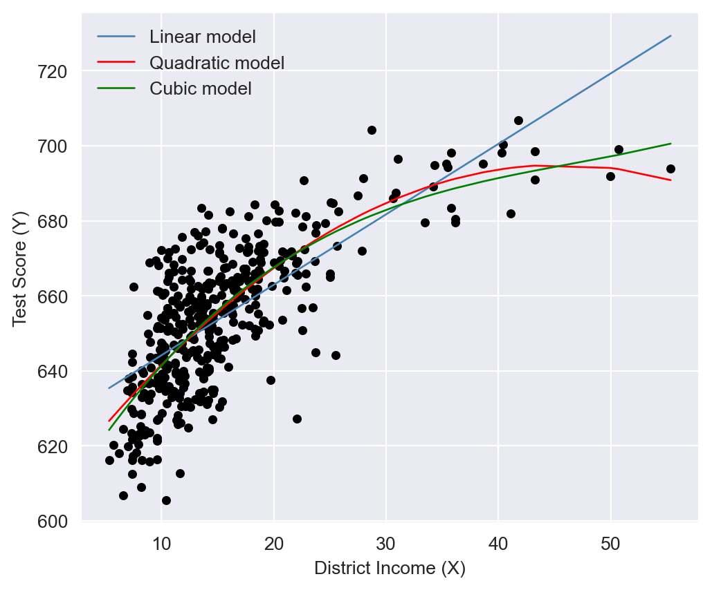
The estimation results in Table 17.1 show that the coefficients of the quadratic and cubic terms are statistically significant. The estimation results of the quadratic model are presented in Table 17.2, where we report the estimated coefficients, standard errors, \(t\)-statistics, \(p\)-values and 95% two-sided confidence intervals. The table shows that the \(t\)-statistics for the quadratic and cubic terms are around -3.3 and 1.97, respectively, with corresponding \(p\)-values of 0.001 and 0.048. Thus, both estimated coefficients are statistically significant at the \(5\%\) significance level.
# Print the estimation results of the cubic model
model3.summary().tables[1]| coef | std err | z | P>|z| | [0.025 | 0.975] | |
| Intercept | 600.0790 | 5.102 | 117.615 | 0.000 | 590.079 | 610.079 |
| avginc | 5.0187 | 0.707 | 7.095 | 0.000 | 3.632 | 6.405 |
| I(avginc ** 2) | -0.0958 | 0.029 | -3.309 | 0.001 | -0.153 | -0.039 |
| I(avginc ** 3) | 0.0007 | 0.000 | 1.975 | 0.048 | 5.25e-06 | 0.001 |
For testing the null hypothesis of linearity, against the alternative that the population regression is quadratic and/or cubic, we consider the following joint null and alternative hypotheses. \[ \begin{align*} &H_0:\beta_2=0,\,\beta_3=0,\\ &H_1:\text{At least one coefficient is not zero}. \end{align*} \]
The F-statistic for this null hypothesis can be computed by using the model3.f_test() function. The following code chunk computes the F-statistic and the associated \(p\)-value.
hypothesis="I(avginc ** 2)=0, I(avginc ** 3)=0"
print(model3.f_test(hypothesis))<F test: F=37.690774113020424, p=9.042596399187178e-16, df_denom=416, df_num=2>The \(F\)-statistic is around 37.7 with a \(p\)-value of 9.043e-16. Thus, we can reject the null hypothesis at the \(5\%\) significance level.
17.3.2 Logarithmic regression models
In logarithmic regression models, we specify specify a nonlinear relationship between \(Y\) and \(X\) using the natural logarithm of \(Y\) and/or \(X\). The logarithmic transformations allow us to model relationships in percentage terms (such as elasticities), rather than linearly. Before introducing logarithmic regression models, we need to recall some properties of exponential and logarithmic functions. The exponential function is \(e^x\), where \(e\) is the base of the natural logarithm. The natural logarithm function is denoted by \(\ln(x)\), where \(x>0\). The natural logarithm function has the following properties:
- \(\ln(xy)=\ln(x)+\ln(y)\),
- \(\ln(x/y)=\ln(x)-\ln(y)\),
- \(\ln(x^n)=n\ln(x)\).
In Figure 17.2, we plot the exponential function \(y=e^x\) and the natural logarithm function \(y=\ln(x)\). The exponential function is increasing and convex, while the natural logarithm function is increasing and concave.
# Exponential and logarithm functions
# Generate values for x
x_exp = np.linspace(-2, 2, 50)
x_log = np.linspace(0.01, 4, 50)
# Compute the function values
y_exp = np.exp(x_exp)
y_log = np.log(x_log)
# Plot the functions
plt.figure(figsize=(6, 4))
# Plot y = e^x
plt.plot(x_exp, y_exp, label=r'$y = e^x$', color="steelblue")
# Plot y = ln(x)
plt.plot(x_log, y_log, label=r'$y = \ln(x)$', color="steelblue", linestyle='--')
# Add x=0 and y=0 lines
plt.axvline(0, color='black',linewidth=1, linestyle='-')
plt.axhline(0, color='black',linewidth=1, linestyle='-')
# Set labels and title
plt.xlabel(r'$x$')
plt.ylabel(r'$y$')
# plt.title('Exponential and logarithm functions')
# Add legend and grid
plt.legend(frameon=False)
# Show plot
plt.show()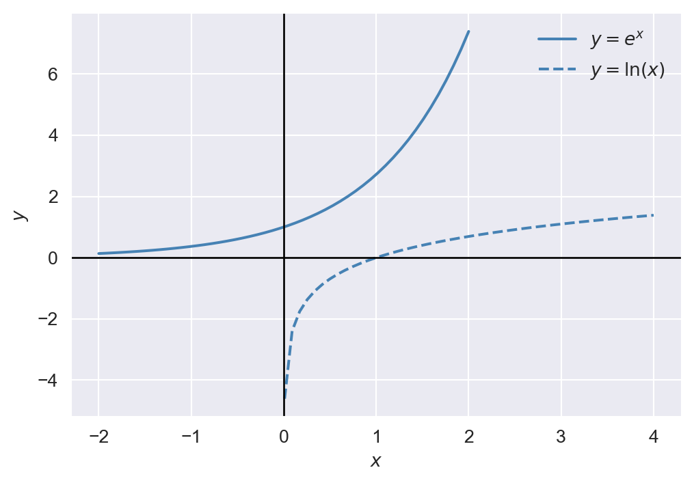
Example 17.1 (Maclaurin series expansions) The Maclaurin series expansions of \(e^x\), \(\ln(1-x)\), and \(\ln(1+x)\) are given by \[ \begin{align} &e^x=1+x+\frac{x^2}{2}+\frac{x^3}{6}+\cdots=\sum_{n=0}^{\infty}\frac{x^n}{n!},\\ &\ln(1-x)=-x-\frac{x^2}{2}-\frac{x^3}{3}-\cdots=-\sum_{n=1}^{\infty}\frac{x^n}{n},\\ &\ln(1+x)=x-\frac{x^2}{2}+\frac{x^3}{3}-\cdots=\sum_{n=1}^{\infty}(-1)^{n+1}\frac{x^n}{n}. \end{align} \]
The first series converges for all \(x\), while the last two series converge for \(|x|<1\). Note that when \(x\) is small, the higher-order terms become negligible in these expansions. For example, we can approximate \(\ln(1+x)\) by \(x\), i.e., \(\ln(1+x)\approx x\), when \(x\) is small.
Using \(\ln(1+x)\approx x\) from Example 17.1, we can express \(\ln(x+\Delta x)-\ln(x)\) as \[ \begin{align} \ln(x+\Delta x)-\ln(x)=\ln\left(\frac{x+\Delta x}{x}\right)=\ln\left(1+\frac{\Delta x}{x}\right)\approx\frac{\Delta x}{x}, \end{align} \tag{17.1}\]
where the last approximation follows when \(\Delta x/x\) is small. Then, using Equation 17.1, we have \(\ln(x_2)-\ln(x_1)\approx\frac{\Delta x}{x_1}\), where \(\Delta x=x_2-x_1\). We call \(\frac{\Delta x}{x}\) the relative change (or the growth rate) in \(x\), and \(100\times\frac{\Delta x}{x}\) the percentage change (or the percentage growth rate) in \(x\).
Example 17.2 (Logarithms and percentages) Assume that \(x=100\) and \(\Delta x=1\), then \(\Delta x/x = 1/100 = 0.01\) (or \(1\%\)), while \(\ln(x+\Delta x)-\ln(x)=\ln(101)-\ln(100)=0.00995\) or \(0.995\%\). Thus \(\Delta x/x\) (which is 0.01) is very close to \(\ln(x+\Delta x)-\ln(x)\) (which is \(0.00995\)).
Using logarithms, we can formulate the following three specifications:
- The linear-log model: \(Y_i=\beta_0+\beta_1\ln(X_i)+u_i\),
- The log-linear model: \(\ln(Y_i)=\beta_0+\beta_1X_i+u_i\), and
- The log-log model: \(\ln(Y_i)=\beta_0+\beta_1\ln(X_i)+u_i\).
Consider the linear-log model and assume that \(X\) changes to \(X+\Delta X\). Then, the change in \(Y\) can be computed from comparing the models before and after the change in \(X\).
- Before the change: \(Y=\beta_0+\beta_1\ln(X)+u\),
- After the change: \(Y+\Delta Y=\beta_0+\beta_1\ln(X+\Delta X)+u\).
Thus, subtracting the model before the change from the model after the change gives \(\Delta Y\) as \[ \begin{align*} &\Delta Y=\left[\ln(X+\Delta X)-\ln(X)\right]\beta_1\approx\beta_1\times\frac{\Delta X}{X}\\ &\implies\Delta Y\approx(0.01\times\beta_1)\left(100\times\frac{\Delta X}{X}\right). \end{align*} \]
Thus, in the linear-log model, if \(X\) changes by \(1\%\), i.e., \(100\times\Delta X/X=1\), then \(Y\) on average changes by \(0.01\times\beta_1\) units.
In the case of the log-linear model, we can express the effect of \(\Delta X\) on \(Y\) by considering the following models:
- Before the change: \(\ln(Y)=\beta_0+\beta_1X+u\),
- After the change: \(\ln(Y+\Delta Y)=\beta_0+\beta_1(X+\Delta X)+u\).
Thus, we can express \(\ln(Y+\Delta Y)-\ln(Y)\) as \[ \begin{align*} &\ln(Y+\Delta Y)-\ln(Y)=\beta_1\Delta X\implies\frac{\Delta Y}{Y}\approx\beta_1\times\Delta X\\ &\implies100\times\frac{\Delta Y}{Y}\approx (100\times\beta_1)\times\Delta X. \end{align*} \]
Thus, in the log-linear model, if \(X\) changes by 1 unit, i.e., \(\Delta X=1\), then \(Y\) on average changes by \((100\times\beta_1)\) percent.
Finally, in the log-log model, we can express the effect of \(\Delta X\) on \(Y\) by considering the following models:
- Before the change: \(\ln(Y)=\beta_0+\beta_1\ln(X)+u\),
- After the change: \(\ln(Y+\Delta Y)=\beta_0+\beta_1\ln(X+\Delta X)+u\).
Thus, we can express \(\ln(Y+\Delta Y)-\ln(Y)\) as \[ \begin{align*} &\ln(Y+\Delta Y)-\ln(Y)=\beta_1\ln\left(1+\frac{\Delta X}{X}\right)\implies\frac{\Delta Y}{Y}\approx\beta_1\times\frac{\Delta X}{X}\\ &\implies100\times\frac{\Delta Y}{Y}\approx\beta_1\times100\times\frac{\Delta X}{X}. \end{align*} \]
Thus, in the log-log model, if \(X\) changes by \(1\%\), i.e., \(100\times\Delta X/X=1\), then \(Y\) on average changes by \(\beta_1\) percent.
For our test score example, we consider the following regression models:
- The linear model: \(\text{TestScore}=\beta_0+\beta_1\text{Income}+u\),
- The quadratic model: \(\text{TestScore}=\beta_0+\beta_1\text{Income}+\beta_2\text{Income}^2+u\),
- The linear-log model: \(\text{TestScore}=\beta_0+\beta_1\ln(\text{Income})+u\),
- The log-linear model: \(\ln(\text{TestScore})=\beta_0+\beta_1\text{Income}+u\),
- The log-log model: \(\ln(\text{TestScore})=\beta_0+\beta_1\ln(\text{Income})+u\).
# Linear model
r1 = smf.ols(formula='testscr ~ avginc',data=mydata).fit(cov_type="HC1")
# Quadratic model
r2 = smf.ols(formula='testscr ~ avginc + I(avginc**2)',
data=mydata).fit(cov_type="HC1")
# Linear-log model
r3 = smf.ols(formula='testscr~np.log(avginc)',
data=mydata).fit(cov_type="HC1")
# Log-linear model
r4 = smf.ols(formula="np.log(testscr) ~ avginc",
data = mydata).fit(cov_type="HC1")
# Log-log model
r5 = smf.ols(formula="np.log(testscr) ~ np.log(avginc)",
data = mydata).fit(cov_type="HC1")# Print results in table form
models=['Linear', 'Quadratic', "Linear-log", "Log-linear", "Log-log"]
results_table=summary_col(results=[r1,r2,r3,r4,r5],
float_format='%0.3f',
stars=True,
model_names=models)
results_table| Linear | Quadratic | Linear-log | Log-linear | Log-log | |
| Intercept | 625.384*** | 607.302*** | 557.832*** | 6.439*** | 6.336*** |
| (1.868) | (2.902) | (3.840) | (0.003) | (0.006) | |
| avginc | 1.879*** | 3.851*** | 0.003*** | ||
| (0.114) | (0.268) | (0.000) | |||
| I(avginc ** 2) | -0.042*** | ||||
| (0.005) | |||||
| np.log(avginc) | 36.420*** | 0.055*** | |||
| (1.397) | (0.002) | ||||
| R-squared | 0.508 | 0.556 | 0.563 | 0.498 | 0.558 |
| R-squared Adj. | 0.506 | 0.554 | 0.561 | 0.497 | 0.557 |
Standard errors in parentheses.
* p<.1, ** p<.05, ***p<.01
The estimation results are presented in Table 17.3. All estimated coefficients presented in Table 17.3 are statistically significant at 5% level. The estimated coefficient of ln(avginc) in the linear-log model is around 36.420, which implies that a \(1\%\) increase in district income is associated with a 0.3642 points increase in test scores. Using the linear-log model, we can compute the predicted difference in test scores for districts with different income levels. For example, for districts with average income levels of 10000 and 11000, the predicted difference in test scores is \[
\begin{align}
\widehat{\Delta\text{TestScore}}&=36.420\times\left[\ln(11000)-\ln(10000)\right]\\
&=36.420\times\ln(1.1)\approx 36.420\times 0.0953\approx 3.47.
\end{align}
\]
On the other hand, the predicted difference in test scores for districts with average income levels of \(40000\) and \(41000\) is \[ \begin{align} \widehat{\Delta\text{TestScore}}&=36.420\times\left[\ln(41000)-\ln(40000)\right]\\ &=36.420\times\ln(1.025)\approx 36.420\times 0.0247\approx 0.90. \end{align} \]
Thus, the predicted difference in test scores is higher for districts with lower income levels.
The results in Table 17.3 indicates that the estimated coefficient of avginc in the log-linear model is around 0.003, which implies that a 1 unit increase in district income (one unit increase means 1000 dollars increase in average income) is associated with a \(0.3\%\) increase in test scores. Finally, the estimated coefficient of ln(avginc) in the log-log model is around 0.055, which implies that a \(1\%\) increase in district income is associated with a \(0.055\%\) increase in test scores.
We plot the estimated regression functions in Figure 17.5 and Figure 17.6. In Figure 17.5, the quadratic model appears to provide a better fit for the data, while in Figure 17.6, the log-log model seems to fit the data more closely.
# Linear, quadratic and linear-log models
# Sorting index for plotting
index = np.argsort(mydata['avginc'])
# Plotting the data points
plt.figure(figsize=(6, 4))
plt.scatter(mydata['avginc'], mydata['testscr'], color='black',
s=15)
plt.xlabel('District Income (X)')
plt.ylabel('Test Score (Y)')
#plt.title('Scatter plot of District Income vs. Test Score')
# Plotting the fitted lines
plt.plot(mydata['avginc'][index], r1.fittedvalues[index],
color='steelblue', linewidth=1, label='Linear model')
plt.plot(mydata['avginc'][index], r2.fittedvalues[index],
color='red', linewidth=1, label='Quadratic model')
plt.plot(mydata['avginc'][index], r3.fittedvalues[index],
color='green', linewidth=1, label='Linear-log model')
plt.legend(frameon=False)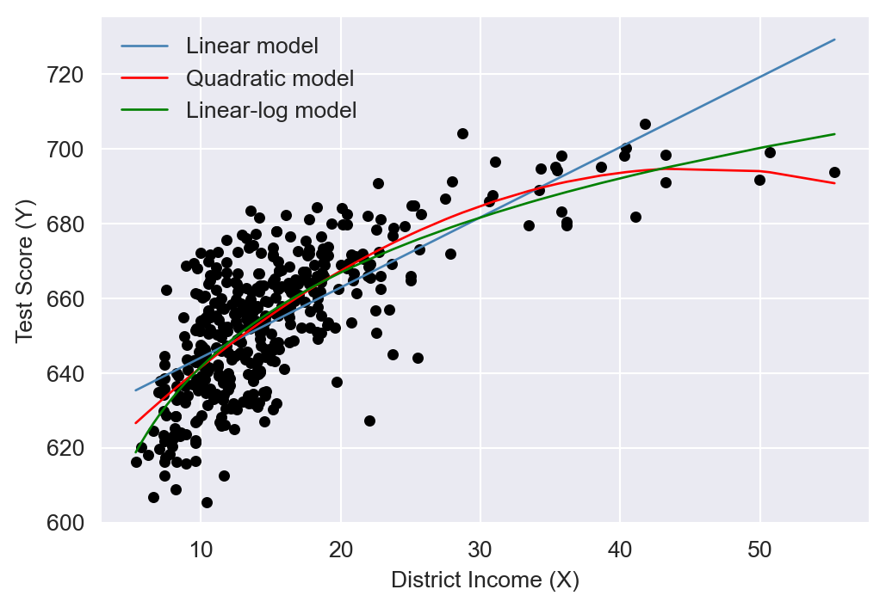
# Log-linear and log-log models
# Sorting index for plotting
index = np.argsort(mydata['avginc'])
# Plotting the data points
plt.figure(figsize=(6, 4))
plt.scatter(mydata['avginc'], np.log(mydata['testscr']), color='black',
s=15)
plt.xlabel('District Income (X)')
plt.ylabel('log(Test Score (Y))')
#plt.title('Scatter plot of District Income vs. Test Score')
# Plotting the fitted lines
plt.plot(mydata['avginc'][index], r4.fittedvalues[index],
color='steelblue', linewidth=1, label='Log-linear model')
plt.plot(mydata['avginc'][index], r5.fittedvalues[index],
color='red', linewidth=1, label='Log-log model')
plt.legend(frameon=False)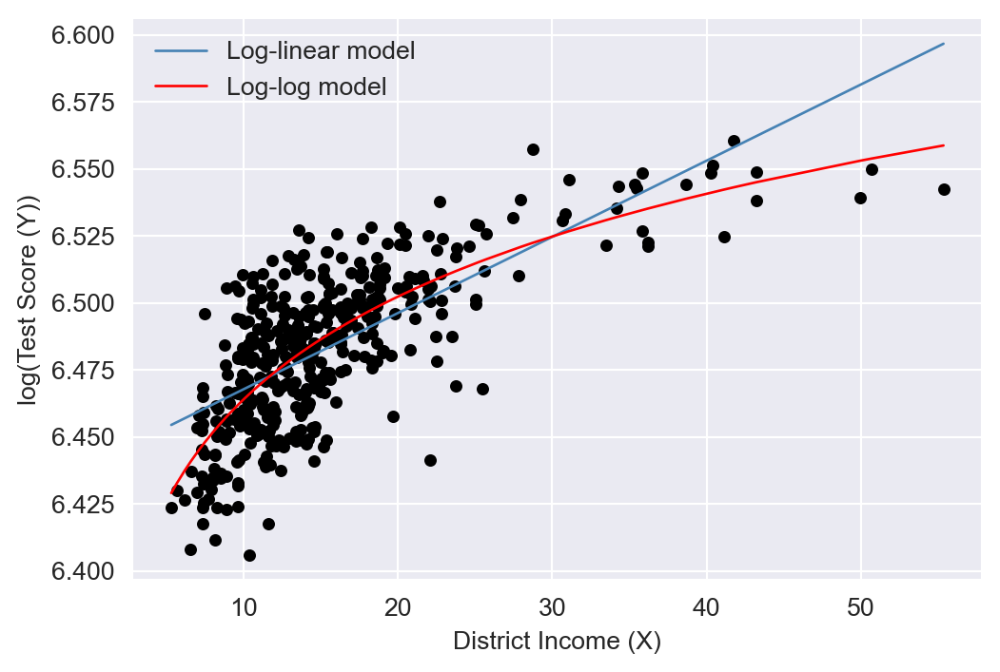
Finally, we can use the adjusted \(R^2\) to determine which model best fits the data. However, caution is needed when using the adjusted \(R^2\) to compare models with different dependent variables, as it should only be used for models with the same dependent variable. The adjusted \(R^2\) values for the linear, quadratic, and linear-log models are approximately 0.506, 0.554, and 0.561, respectively. Therefore, the linear-log model has the highest adjusted \(R^2\) and is the best fit for the data. For the log-linear and log-log models, the adjusted \(R^2\) values are about 0.497 and 0.557, respectively; hence, the log-log model provides relatively better fit.
Since the dependent variables differ between the linear-log and log-log models, we cannot directly compare their adjusted \(R^2\) values. Stock and Watson (2020) suggest using economic theory or expert judgment to decide whether to specify the model with \(Y\) or \(\ln(Y)\) as the dependent variable. They write, “In modeling test scores, it seems natural (to us, anyway) to discuss test results in terms of points on the test rather than percentage increases in the test scores, so we focus on models in which the dependent variable is the test score rather than its logarithm.”
17.4 Interactions between independent variables
In this section, we consider the interaction terms formed by the product of two independent variables. In models with interaction terms, the effect of an independent variable on \(Y\) depends also on the variable with which it is interacted.
17.4.1 Interactions between two binary variables
Consider the following regression model: \[ \begin{align} Y_i=\beta_0+\beta_1D_{1i}+\beta_2D_{2i}+u_i,\quad i=1,2,\cdots,n, \end{align} \] where \(D_1\) and \(D_2\) are binary variables, i.e., dummy variables. In this model, the effect of changing \(D_1=0\) to \(D_1=1\) is given by \(\beta_1\), which does not depend on the value of \(D_2\). To allow the effect of changing \(D_1\) to depend on \(D_2\), we include the interaction term (or the interacted regressor) \(D_{1i}\times D_{2i}\) as a regressor to the model: \[ \begin{align} Y_i=\beta_0+\beta_1D_{1i}+\beta_2D_{2i}+\beta_3\left(D_{1i}\times D_{2i}\right)+u_i. \end{align} \]
The interaction term \(\beta_3\left(D_{1i}\times D_{2i}\right)\) captures the effect of changing \(D_1\) on \(Y\) when \(D_2=1\). To see this, consider the conditional expectation of \(Y\) given \(D_1\) and \(D_2\): \[ \begin{align*} &\E(Y_i|D_{1i}=0,D_{2i}=d_2)=\beta_0+\beta_2d_2,\\ &\E(Y_i|D_{1i}=1,D_{2i}=d_2)=\beta_0+\beta_1+\beta_2d_2+\beta_3d_2. \end{align*} \]
Then, we can express \(\E(Y_i|D_{1i}=1,D_{2i}=d_2)-\E(Y_i|D_{1i}=0,D_{2i}=d_2)\) as \[ \begin{align} \E(Y_i|D_{1i}=1,D_{2i}=d_2)-\E(Y_i|D_{1i}=0,D_{2i}=d_2)=\beta_1+\beta_3d_2, \end{align} \] which depends on \(d_2\). If \(d_2=0\), the effect of changing \(D_1\) from 0 to 1 on \(Y\) is \(\beta_1\), while if \(d_2=1\), the effect of changing \(D_1\) from 0 to 1 on \(Y\) is \(\beta_1 + \beta_3\).
As an example, we consider the following regression model for the test scores data: \[ \begin{align} \text{TestScore}_i=\beta_0+\beta_1\text{HiSTR}_i+\beta_2\text{HiEL}_i+\beta_3\left(\text{HiSTR}_i\times\text{HiEL}_i\right)+u_i, \end{align} \] where \[ \begin{align*} \text{HiSTR}_i= \begin{cases} 1,\,\text{if STR}_i\geq20,\\ 0,\,\text{if STR}_i<20. \end{cases} \qquad \text{HiEL}_i= \begin{cases} 1,\,\text{if PctEL}_i\geq10,\\ 0,\,\text{if PctEL}_i<10. \end{cases} \end{align*} \]
Here, \(\text{HiSTR}_i\) is a binary variable equal to 1 if the student-teacher ratio is 20 or more, and 0 otherwise; \(\text{HiEL}_i\) is another binary variable equal to 1 if the percentage of English learners is 10% or more, and 0 otherwise. We use the following code chunk to estimate the model and present the results in Table 17.4.
# Generate dummy variables
mydata["histr"] = mydata["str"] >= 20
mydata["hiel"] = mydata["el_pct"] >= 10
# Estimation
r1 = smf.ols(formula='testscr ~ histr + hiel + histr*hiel',
data=mydata).fit(cov_type="HC1")# Print results in a table form
models = ['Model']
results_table = summary_col(results=[r1],
float_format='%0.3f',
stars=True,
model_names=models)
results_table| Model | |
| Intercept | 664.143*** |
| (1.388) | |
| histr[T.True] | -1.908 |
| (1.932) | |
| hiel[T.True] | -18.163*** |
| (2.346) | |
| histr[T.True]:hiel[T.True] | -3.494 |
| (3.121) | |
| R-squared | 0.296 |
| R-squared Adj. | 0.290 |
Standard errors in parentheses.
* p<.1, ** p<.05, ***p<.01
According to the estimation results in Table 17.4, the estimated model is \[ \begin{align} \widehat{\text{TestScore}}_i=664.1-1.9\text{HiSTR}_i-18.2\text{HiEL}_i-3.5\left(\text{HiSTR}_i\times\text{HiEL}_i\right). \end{align} \]
The effect of \(\text{HiSTR}\) on the average test score when \(\text{HiEL} = 0\) is \(-1.9\) points, whereas the effect of \(\text{HiSTR}\) on the average test score when \(\text{HiEL} = 1\) is \(-1.9 - 3.5 = -5.4\) points. When the percentage of English learners is low (i.e., when \(\text{HiEL} = 0\)), a district with a high student-teacher ratio has, on average, 1.9 fewer points than a district with a low student-teacher ratio. On the other hand, when the percentage of English learners is high (i.e., when \(\text{HiEL} = 1\)), a district with a high student-teacher ratio has, on average, 5.4 fewer points than a district with a low student-teacher ratio.
17.4.2 Interactions between a continuous and a binary variable
In this section, we consider regression models that include an interaction term formulated with a continuous and a binary variable. Consider the following model: \[ \begin{align} Y_i=\beta_0+\beta_1D_{i}+\beta_2X_{i}+u_i,\quad i=1,2,\dots,n, \end{align} \] where \(D\) is a binary and \(X\) is a continuous variable. In this model, the effect of \(X\) on \(Y\) is \(\beta_2\) and does not depend on the value of \(D\). However, the dummy variable \(D\) can affect the intercept of the regression function. When \(D=0\), the intercept is \(\beta_0\), while when \(D=1\), the intercept is \(\beta_0+\beta_1\). This case is illustrated in the first plot of Figure 17.7.
To allow the effect of \(X\) to depend on \(D\), we expend the model by including the interaction term \(D_i\times X_i\) as a regressor: \[ \begin{align} Y_i=\beta_0+\beta_1D_{i}+\beta_2X_{i}+\beta_3\left(D_i\times X_i\right)+u_i,\quad i=1,2,\cdots,n. \end{align} \] When \(D=0\), the population regression function is \(Y=\beta_0+\beta_2X\), while when \(D=1\), the population regression function is \(Y=(\beta_0+\beta_1)+(\beta_2+\beta_3)X\). In particular, the effect of one unit change in \(X\) on \(Y\) is \(\beta_2\) when \(D=0\) and \(\beta_2+\beta_3\) when \(D=1\). This case is illustrated in the second plot of Figure 17.7.
A third case arises when the slope of the regression function only depends on the value of the binary variable. Consider the following model: \[ \begin{align} Y_i=\beta_0+\beta_1X_{i}+\beta_2\left(D_i\times X_i\right)+u_i,\quad i=1,2,\cdots,n. \end{align} \] This case is illustrated in the third plot of Figure 17.7.
# Define the parameters
beta_0 = 1
beta_1 = 2
beta_2 = 3
beta_3 = 0.5
# Generate data
x = np.linspace(0, 10, 100)
# Define the functions
y1_1 = (beta_0 + beta_2) + beta_1 * x
y1_2 = beta_0 + beta_1 * x
y2_1 = (beta_0 + beta_2) + (beta_1 + beta_3) * x
y2_2 = beta_0 + beta_1 * x
y3_1 = beta_0 + (beta_1 + beta_2) * x
y3_2 = beta_0 + beta_1 * x
# Create the figure and subplots in a 2x2 grid layout
fig, axs = plt.subplots(2, 2, figsize=(7, 6))
# Plot 1: Different intercepts, same slopes
axs[0, 0].plot(x, y1_1, label=r'$Y=(\beta_0+\beta_2)+\beta_1X$', color='steelblue')
axs[0, 0].plot(x, y1_2, label=r'$Y=\beta_0+\beta_1X$', color='black')
axs[0, 0].set_title('Different intercepts and same slopes', fontsize=10)
axs[0, 0].set_xlabel(r'$X$', fontsize=10)
axs[0, 0].set_ylabel(r'$Y$', fontsize=10)
axs[0, 0].legend(frameon=False, fontsize=9)
# Plot 2: Different intercepts and slopes
axs[0, 1].plot(x, y2_1, label=r'$Y=(\beta_0+\beta_2)+(\beta_1+\beta_3)X$', color='steelblue')
axs[0, 1].plot(x, y2_2, label=r'$Y=\beta_0+\beta_1X$', color='black')
axs[0, 1].set_title('Different intercepts and slopes', fontsize=10)
axs[0, 1].set_xlabel(r'$X$', fontsize=10)
axs[0, 1].set_ylabel(r'$Y$', fontsize=10)
axs[0, 1].legend(frameon=False, fontsize=9)
# Plot 3: Same intercept, different slopes
axs[1, 0].plot(x, y3_1, label=r'$Y=\beta_0+(\beta_1+\beta_2)X$', color='steelblue')
axs[1, 0].plot(x, y3_2, label=r'$Y=\beta_0+\beta_1X$', color='black')
axs[1, 0].set_title('Same intercept and different slopes', fontsize=10)
axs[1, 0].set_xlabel(r'$X$', fontsize=10)
axs[1, 0].set_ylabel(r'$Y$', fontsize=10)
axs[1, 0].legend(frameon=False, fontsize=9)
# Remove the empty subplot (bottom-right cell)
fig.delaxes(axs[1, 1])
# Adjust layout
plt.tight_layout()
plt.show()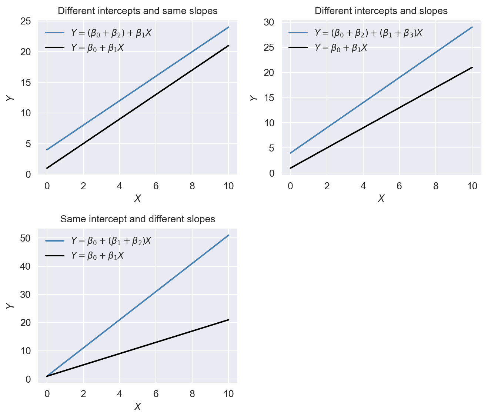
In the test scores example, we consider the following regression model: \[ \begin{align} \text{TestScore}_i = \beta_0+\beta_1\text{STR}_i+\beta_2\text{HiEL}_i+\beta_3\left(\text{STR}_i\times\text{HiEL}_i\right)+u_i, \end{align} \] where \(\text{HiEL}_i\) is a binary variable that equals \(1\) if the percentage of English learners is 10% or more and 0 otherwise. The estimation results are presented in Table 17.5.
r2 = smf.ols(formula="testscr ~ str + hiel + str*hiel",
data = mydata).fit(cov_type="HC1")# Print results in table form
models = ['Model']
results_table = summary_col(results=[r2],
float_format='%0.3f',
stars=True,
model_names=models)
results_table| Model | |
| Intercept | 682.246*** |
| (11.868) | |
| hiel[T.True] | 5.639 |
| (19.515) | |
| str | -0.968 |
| (0.589) | |
| str:hiel[T.True] | -1.277 |
| (0.967) | |
| R-squared | 0.310 |
| R-squared Adj. | 0.305 |
Standard errors in parentheses.
* p<.1, ** p<.05, ***p<.01
According to the estimation results presented in Table 17.5, the estimated model is \[ \begin{align} \widehat{\text{TestScore}}_i=682.2-0.97\text{STR}_i+5.6\text{HiEL}_i-1.28\left(\text{STR}_i\times\text{HiEL}_i\right). \end{align} \]
Thus, for districts with a low percentage of English learners (\(\text{HiEL}_i=0\)), the estimated regression line is \(\widehat{\text{TestScore}}_i=682.2-0.97\text{STR}_i\). In contrast, for districts with a high percentage of English learners (\(\text{HiEL}_i=1\)), the estimated regression line becomes \(\widehat{\text{TestScore}}_i=682.2+5.6-0.97\text{STR}_i-1.28\text{STR}_i=687.8-2.25\text{STR}_i\). These two regression lines are plotted in Figure 17.8. According to these estimates, when STR increases by \(1\), the test score declines on average by \(0.97\) points in districts with low percentage of English learners. On the other hand, when STR increases by \(1\) student, the test score declines on average by \(2.25\) points in districts with high percentage of English learners.
# Define the parameters
beta_0 = 682.2
beta_1 = -0.97
beta_2 = 5.6
beta_3 = -1.28
# Generate data
x = mydata['str']
# Define the functions
y1 = beta_0 + beta_1 * x
y2 = (beta_0 + beta_2) + (beta_1 + beta_3) * x
# Create the figure and plot
plt.figure(figsize=(5, 3))
plt.plot(x, y1, label=r'$\widehat{TestScore}=682.2-0.97\text{STR}$', color='steelblue')
plt.plot(x, y2, label=r'$\widehat{TestScore}=687.8-2.25\text{STR}$', color='black')
plt.xlabel('Student-teacher ratio', fontsize=10)
plt.ylabel('Predicted test score', fontsize=10)
plt.legend(frameon=False, fontsize=9)
plt.show()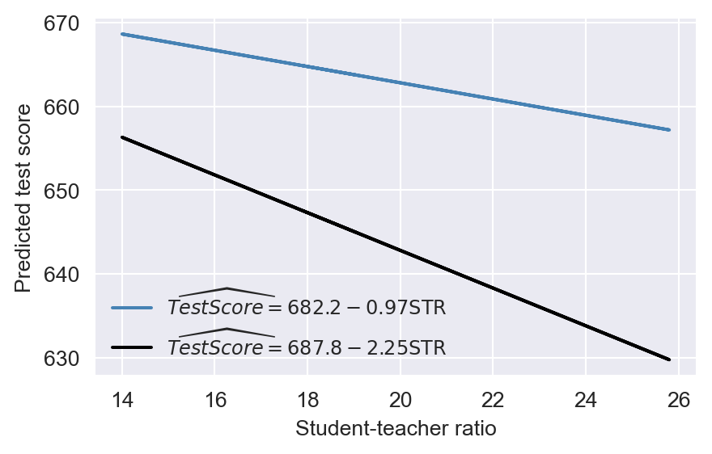
Finally, we consider the following joint null and alternative hypotheses: \[ \begin{align*} H_0: \beta_2=0,\,\beta_3=0\quad\text{versus}\quad H_1:\text{At least one is nonzero}. \end{align*} \]
We use the heteroskedasticity-robust \(F\)-statistic to test this hypothesis. The \(F\)-statistic is around 89.9 with a \(p\)-value less than 0.05. Thus, we reject the null hypothesis.
hypothesis = "hiel[T.True]=0, str:hiel[T.True]=0"
r2.f_test(hypothesis)<class 'statsmodels.stats.contrast.ContrastResults'>
<F test: F=89.93943806524757, p=3.455817929259153e-33, df_denom=416, df_num=2>17.4.3 Interactions between two continuous variables
In this section, we consider interection terms formulated with continuous variables. To allow the effect of the continuous variable \(X_1\) on \(Y\) to depend on another continuous variable \(X_2\), we include the interaction term \(X_1\times X_2\) as a regressor in th following model: \[ \begin{align} Y_i=\beta_0+\beta_1X_{1i}+\beta_2X_{2i}+\beta_3\left(X_{1i}\times X_{2i}\right)+u_i,\quad i=1,2,\dots,n. \end{align} \tag{17.2}\]
Assume that \(X_1\) changes to \(X_1+\Delta X_1\). Then, the change in \(Y\) can be computed as \[ \begin{align*} Y+\Delta Y=\beta_0+\beta_1(X_1+\Delta X_1)+\beta_2X_2+\beta_3\left((X_1+\Delta X_1)\times X_2\right)+u. \end{align*} \tag{17.3}\]
Subtracting Equation 17.2 from Equation 17.3, we have \[ \begin{align*} \Delta Y=\beta_1\Delta X_1+\beta_3X_2\times\Delta X_1\implies \frac{\Delta Y}{\Delta X_1}=\beta_1+\beta_3X_2. \end{align*} \] Thus, the effect of achange in \(X_1\) on \(Y\) depends on \(X_2\).
In the test scores example, we consider the following regression model:
\[ \begin{align}\label{eq12} \text{TestScore}_i=\beta_0+\beta_1\text{STR}_i+\beta_2\text{PctEL}_i+\beta_3\left(\text{STR}_i\times\text{PctEL}_i\right)+u_i. \end{align} \]
We use the following code chunk to estimate the model and present the results in Table 17.6.
r3 = smf.ols(formula="testscr ~ str + el_pct + str*el_pct",
data = mydata).fit(cov_type="HC1")models = ["Model"]
r3_table = summary_col(results=r3,
float_format="%0.4f",
stars=True,
model_names=models)
r3_table| Model | |
| Intercept | 686.3385*** |
| (11.7593) | |
| str | -1.1170* |
| (0.5875) | |
| el_pct | -0.6729* |
| (0.3741) | |
| str:el_pct | 0.0012 |
| (0.0185) | |
| R-squared | 0.4264 |
| R-squared Adj. | 0.4223 |
Standard errors in parentheses.
* p<.1, ** p<.05, ***p<.01
The estimated model is \[ \begin{align} \widehat{\text{TestScore}}_i=683.3-1.12\text{STR}_i-0.67\text{PctEL}_i+0.0012\left(\text{STR}_i\times\text{PctEL}_i\right). \end{align} \]
The estimated effect of class size reduction is not constant because the size of the effect itself depends on PctEL: \[
\frac{\Delta\widehat{\text{TestScore}}}{\Delta\text{STR}}=-1.12 + 0.0012\text{PctEL}.
\]
Consider the effect of STR when PctEL is at its median value PctEL=8.85. Then, we have \[
\frac{\Delta\widehat{\text{TestScore}}}{\Delta\text{STR}} = -1.12 + 0.0012 \text{PctEL} = -1.12 + 0.0012 \times 8.85 = -1.11.
\]
Thus, when PctEL=8.85, the estimated effect of one-unit increase in STR is a decrease in average test scores by 1.11 points.
17.5 Nonlinear effects on test scores of the student–teacher ratio
In this section, we address three specific questions regarding the relationship between test scores and the student-teacher ratio:
- After controlling for the economic conditions of school districts, does the effect of the student-teacher ratio on test scores depend on the fraction of English learners?
- Is there a non-linear relationship between test scores and the student-teacher ratio?
- What is the quantitative effect of decreasing the student-teacher ratio by two on test scores after accounting for economic characteristics and nonlinearities?
To answer these questions, we also consider the following variables on the economic conditions of school districts:
el_pct: the percentage of English learning students.HiEL: a binary variable that equals \(1\) if the percentage of English learners is \(10\%\) or more, and 0 otherwise.meal_pct: the share of students that qualify for a subsidized or a free lunch at school.avginc: the average district income (in $1000’s).
We consider a total of seven models, some of which are nonlinear regression specifications:
\[ \begin{align*} &1.\, \text{TestScore}_i=\beta_0+\beta_1\text{STR}_i+\beta_2\text{PctEL}_i+{\color{steelblue}\beta_3\text{meal\_pct}_i}+u_i,\\ &2.\, \text{TestScore}_i=\beta_0+\beta_1\text{STR}_i+\beta_2\text{PctEL}_i+{\color{steelblue}\beta_3\text{meal\_pct}_i+\beta_4\ln\left(\text{avginc}_i\right)}+u_i,\\ &3.\, \text{TestScore}_i=\beta_0+\beta_1\text{STR}_i+\beta_2\text{HiEL}_i+\beta_3(\text{HiEL}_i\times\text{STR}_i)+u_i,\\ &4.\, \text{TestScore}_i=\beta_0+\beta_1\text{STR}_i+\beta_2\text{HiEL}_i+\beta_3(\text{HiEL}_i\times\text{STR}_i)+{\color{steelblue}\beta_4\text{meal\_pct}_i+\beta_5\ln\left(\text{avginc}_i\right)}+u_i,\\ &5.\, \text{TestScore}_i=\beta_0+\beta_1\text{STR}_i+\beta_2\text{STR}^2_i+\beta_3\text{STR}^3_i+\beta_4\text{HiEL}_i+{\color{steelblue}\beta_5\text{meal\_pct}_i+\beta_6\ln\left(\text{avginc}_i\right)}+u_i,\\ &6.\, \text{TestScore}_i=\beta_0+\beta_1\text{STR}_i+\beta_2\text{STR}^2_i+\beta_3\text{STR}^3_i+\beta_4\text{HiEL}_i+\beta_5(\text{HiEL}_i\times\text{STR}_i)\\ &\quad\quad\quad\quad\quad\quad+\beta_6(\text{HiEL}_i\times\text{STR}^2_i)+\beta_7(\text{HiEL}_i\times\text{STR}^3_i)+{\color{steelblue}\beta_8\text{meal\_pct}_i+\beta_9\ln\left(\text{avginc}_i\right)}+u_i,\\ &7.\, \text{TestScore}_i=\beta_0+\beta_1\text{STR}_i+\beta_2\text{STR}^2_i+\beta_3\text{STR}^3_i+\beta_4\text{PctEL}_i+{\color{steelblue}\beta_5\text{meal\_pct}_i+\beta_6\ln\left(\text{avginc}_i\right)}+u_i.\\ \end{align*} \]
The following code chunks can be used to produce the estimation results given in Table 17.7.
# Model 1
r1 = smf.ols(formula="testscr ~ str + el_pct + meal_pct",
data = mydata).fit(cov_type="HC1")
# Model 2
r2 = smf.ols(formula="testscr ~ str + el_pct + meal_pct + np.log(avginc)",
data = mydata).fit(cov_type="HC1")
# Model 3
r3 = smf.ols(formula="testscr ~ str + hiel + hiel*str",
data = mydata).fit(cov_type="HC1")
# Model 4
r4 = smf.ols(formula="testscr ~ str + hiel + hiel*str + meal_pct + np.log(avginc)",
data = mydata).fit(cov_type="HC1")
# Model 5
r5 = smf.ols(formula="testscr ~ str + I(str**2) + I(str**3) + hiel + meal_pct + np.log(avginc)", data = mydata).fit(cov_type="HC3")
# Model 6
r6 = smf.ols(formula="testscr ~ str + I(str**2) + I(str**3) + hiel + hiel*str + hiel*I(str**2) + hiel * I(str**3) + meal_pct + np.log(avginc)",
data = mydata).fit(cov_type="HC1")
# Model 7
r7 = smf.ols(formula="testscr ~ str + I(str**2) + I(str**3) + el_pct + meal_pct + np.log(avginc)", data = mydata).fit(cov_type="HC1")models = ["Model 1","Model 2", "Model 3", "Model 4", "Model 5", "Model 6", "Model 7"]
application_table = summary_col(results=[r1,r2,r3,r4,r5,r6,r7],
float_format="%0.3f",
stars=True,
model_names=models)
application_table| Model 1 | Model 2 | Model 3 | Model 4 | Model 5 | Model 6 | Model 7 | |
| Intercept | 700.150*** | 658.552*** | 682.246*** | 653.666*** | 252.051 | 122.354 | 244.809 |
| (5.568) | (8.642) | (11.868) | (9.869) | (179.724) | (185.519) | (165.722) | |
| str | -0.998*** | -0.734*** | -0.968 | -0.531 | 64.339** | 83.701*** | 65.285*** |
| (0.270) | (0.257) | (0.589) | (0.342) | (27.295) | (28.497) | (25.259) | |
| el_pct | -0.122*** | -0.176*** | -0.166*** | ||||
| (0.033) | (0.034) | (0.034) | |||||
| meal_pct | -0.547*** | -0.398*** | -0.411*** | -0.420*** | -0.418*** | -0.402*** | |
| (0.024) | (0.033) | (0.029) | (0.029) | (0.029) | (0.033) | ||
| np.log(avginc) | 11.569*** | 12.124*** | 11.748*** | 11.800*** | 11.509*** | ||
| (1.819) | (1.798) | (1.799) | (1.778) | (1.806) | |||
| hiel[T.True] | 5.639 | 5.498 | -5.474*** | 816.075** | |||
| (19.515) | (9.795) | (1.046) | (327.674) | ||||
| hiel[T.True]:str | -1.277 | -0.578 | -123.282** | ||||
| (0.967) | (0.496) | (50.213) | |||||
| I(str ** 2) | -3.424** | -4.381*** | -3.466*** | ||||
| (1.373) | (1.441) | (1.271) | |||||
| I(str ** 3) | 0.059*** | 0.075*** | 0.060*** | ||||
| (0.023) | (0.024) | (0.021) | |||||
| hiel[T.True]:I(str ** 2) | 6.121** | ||||||
| (2.542) | |||||||
| hiel[T.True]:I(str ** 3) | -0.101** | ||||||
| (0.043) | |||||||
| R-squared | 0.775 | 0.796 | 0.310 | 0.797 | 0.801 | 0.803 | 0.801 |
| R-squared Adj. | 0.773 | 0.794 | 0.305 | 0.795 | 0.798 | 0.799 | 0.798 |
Standard errors in parentheses.
* p<.1, ** p<.05, ***p<.01
Starting with the results for Model 1, we see that the estimated coefficient on STR is statistically significant. The results for Model 2 show that adding ln(avginc) reduces the estimated coefficient on STR to -0.734, though this estimate remains statistically significant. In Models 3 and 4, we aim to assess the effect of allowing for an interaction term, STR × HiEL, both without and with economic control variables. In both models, we observe that the coefficient on the interaction term and the coefficient on HiEL are not statistically significant. Thus, even with economic controls, we cannot reject the null hypothesis that the effect of the student-teacher ratio on test scores is the same for districts with high and low shares of English learners.
Model 5 includes a cubic term for the student-teacher ratio and omits the interaction STR × HiEL. The results indicate that there is a nonlinear effect of STR on test scores. We can verify this non-linear relationship by testing the joint null hypothesis: \(H_0:\beta_2=0,\beta_3=0\). The F-statistic is around 5 with a \(p\)-value less than 0.05. Thus, we reject the null hypothesis at the \(5\%\) significance level.
hypothesis = "I(str ** 2)=0, I(str ** 3)=0"
print(r5.f_test(hypothesis))<F test: F=5.020509901247472, p=0.007009765089114624, df_denom=413, df_num=2>Model 6 further examines whether the effect of STR depends not just on its value but also on the fraction of English learners. All individual t-statistics indicate that the estimated coefficients on HiEL and its interaction terms are statistically significant. We can further check this by using a robust \(F\)-test for the joint null hypothesis: \(H_0:\beta_5=0,\beta_6=0,\beta_7=0\). The F-statistic is around 2.19 with a \(p\)-value less than 0.10. Thus, we only reject the null hypothesis at the \(10\%\) significance level.
hypothesis="hiel[T.True]:str=0, hiel[T.True]:I(str ** 2)=0, hiel[T.True]:I(str ** 3)=0"
print(r6.f_test(hypothesis))<F test: F=2.6902462480680165, p=0.04596931813371919, df_denom=410, df_num=3>Model 7 is a modification of Model 5, in which the continuous variable PctEL is used instead of the binary variable HiEL to control for the effect of the percentage of English learners. The coefficients on the other regressors do not change substantially when this modification is made, indicating that the results in Model 5 are not sensitive to whether we use PctEL or HiEL.
The nonlinear specifications in Table 17.7 are most easily interpreted graphically. In Figure 17.9, we present plots of the estimated regression functions for Models 2, 5, and 7, along with a scatterplot of testscr and str. For each curve, we compute predicted values by setting each independent variable, other than str, to its sample average. These estimated regression functions show the predicted test scores as a function of str, with other independent variables fixed at their sample averages. The figure illustrates that the estimated regression functions are all quite similar to one another.
# Plotting the estimated regression functions for Models 2, 5, and 7
# Creating new data for predictions
mydata["hiel"]=mydata["hiel"].astype(int) # Convert hiel to 0s and 1s
# Model 5
r5 = smf.ols(formula=
"testscr ~ str + I(str**2) + I(str**3)+ hiel + meal_pct + np.log(avginc)",
data = mydata).fit(cov_type="HC3")
# Creating new data for predictions
new_data = pd.DataFrame({
'str': np.arange(14, 26.01, 0.01),
'el_pct': [mydata['el_pct'].mean()] * len(np.arange(14, 26.01, 0.01)),
'meal_pct': [mydata['meal_pct'].mean()] * len(np.arange(14, 26.01, 0.01)),
'avginc': [mydata['avginc'].mean()] * len(np.arange(14, 26.01, 0.01)),
'hiel': [mydata['hiel'].mean()] * len(np.arange(14, 26.01, 0.01))
})
new_data['log_avginc'] = np.log(new_data['avginc'])
# Predicting with models
r2_fitted = r2.predict(new_data)
r5_fitted = r5.predict(new_data)
r7_fitted = r7.predict(new_data)# Plotting
plt.figure(figsize=(6, 5))
plt.scatter(mydata['str'], mydata['testscr'], color='steelblue',
s=15)
plt.xlim(13, 27)
plt.ylim(600, 725)
plt.xlabel('STR (X)')
plt.ylabel('Test Score (Y)')
plt.grid(True, linestyle='--', linewidth=0.5)
# Plotting the fitted lines
plt.plot(new_data['str'], r2_fitted, color='blue', linewidth=2, label='Model 2')
plt.plot(new_data['str'], r5_fitted, color='red', linewidth=2, label='Model 5')
plt.plot(new_data['str'], r7_fitted, color='black', linewidth=2, label='Model 7')
# Adding the legend
plt.legend(loc='upper right', frameon=False)
plt.show()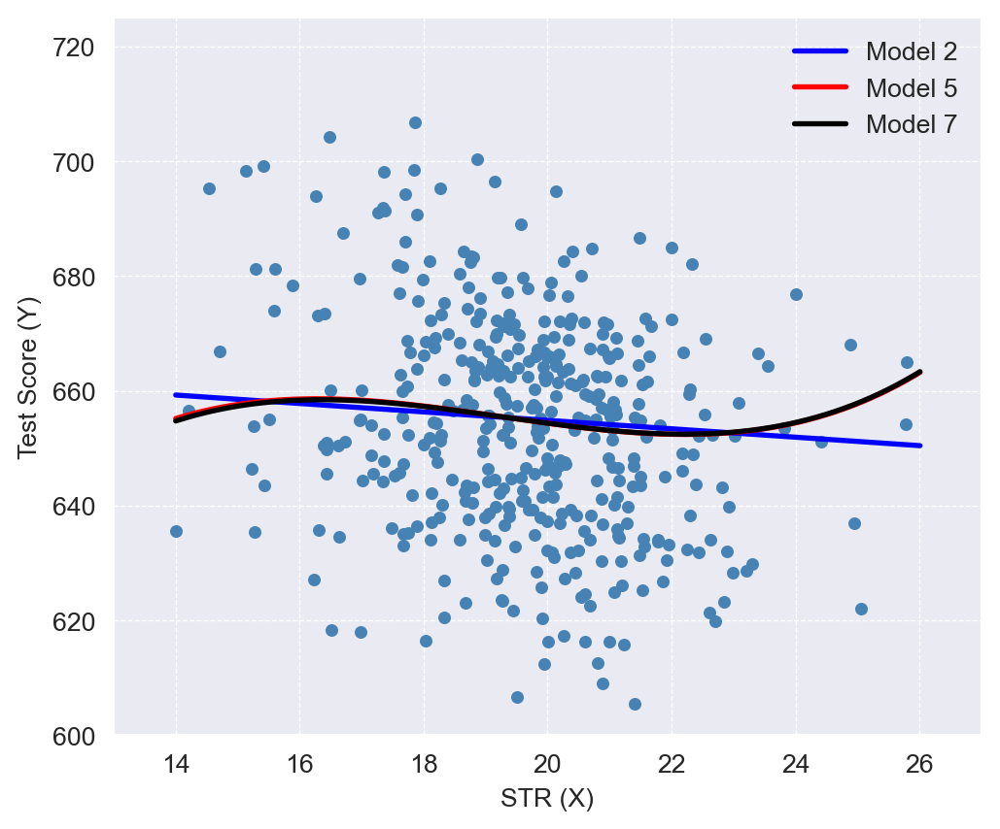
In Figure 17.10, we present the estimated regression functions for Model 6 when HiEL = 0 and HiEL = 1. Although the two regression functions appear different, the slopes are nearly identical when str take values between 17 and 23. Since this range encompasses nearly all observations, we can reasonably conclude that nonlinear interactions between the fraction of English learners and the student-teacher ratio can be disregarded.
# Plotting the estimated regression functions for Model 6
# Creating new data for predictions
new_data = pd.DataFrame({
'str': np.arange(14, 26.01, 0.01),
'el_pct': [mydata['el_pct'].mean()] * len(np.arange(14, 26.01, 0.01)),
'meal_pct': [mydata['meal_pct'].mean()] * len(np.arange(14, 26.01, 0.01)),
'avginc': [mydata['avginc'].mean()] * len(np.arange(14, 26.01, 0.01)),
'hiel': [0] * len(np.arange(14, 26.01, 0.01))
})
# Predicting with HiEL = 0
r6_fitted_hiel_0 = r6.predict(new_data)
# Update new_data for HiEL = 1
new_data['hiel'] = 1
r6_fitted_hiel_1 = r6.predict(new_data)# Plotting
plt.figure(figsize=(6, 5))
# Points where hiel == 0
plt.scatter(mydata['str'][mydata['hiel'] == 0],
mydata['testscr'][mydata['hiel'] == 0],
color='steelblue', s=15, label='HiEL = 0')
# Points where hiel == 1
plt.scatter(mydata['str'][mydata['hiel'] == 1],
mydata['testscr'][mydata['hiel'] == 1],
color='black', s=15, label='HiEL = 1')
# Plotting the fitted lines
plt.plot(new_data['str'], r6_fitted_hiel_0, color='blue',
linewidth=2, label='Model 6 with HiEL = 0')
plt.plot(new_data['str'], r6_fitted_hiel_1, color='red',
linewidth=2, label='Model 6 with HiEL = 1')
# Adding plot details
plt.xlim(13, 27)
plt.ylim(600, 725)
plt.xlabel('STR (X)')
plt.ylabel('Test Score (Y)')
plt.legend(loc='upper right', frameon=False)
plt.show()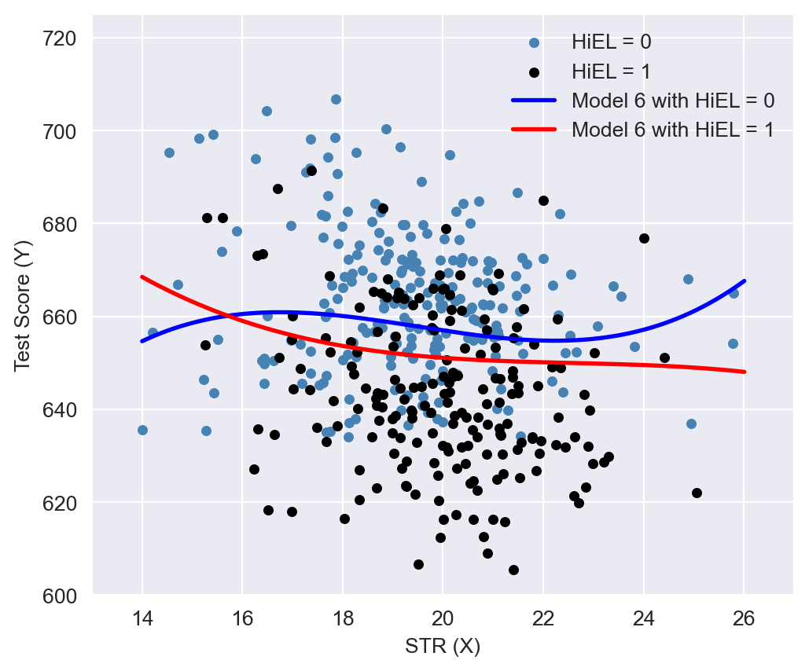
Finally, following Stock and Watson (2020), we can summarize the main findings of the empirical application as follows:
- The results for Models 3, 4, and 6 show that, after controlling for economic background, there is weak statistical evidence that the effect of a change in
strdepends on whether there are many or few English learners in the district. - The results for Models 5 and 6 show that after controlling for economic background, there is evidence of a nonlinear relationship between test scores and the student-teacher ratio.
- Acoording to estimated Model 2, if
strdeclines by two students, test scores are expected to increase by \(-0.73\times (-2)=1.46\) points. Since the model is linear, this effect is independent of the class size. - Using the estimation results for Model 5 and assuming that
str=20, a decrease in str tostr = 18is expected to increase test scores by 3.3 points, as shown below: \[ \begin{align*} &\Delta\widehat{\text{TestScore}}=64.33\times 18+18^2\times(-3.424)+18^3\times(0.059)\\ &-\left(64.33\times 20+20^2\times(-3.424)+20^3\times(0.059)\right)\approx3.3. \end{align*} \]